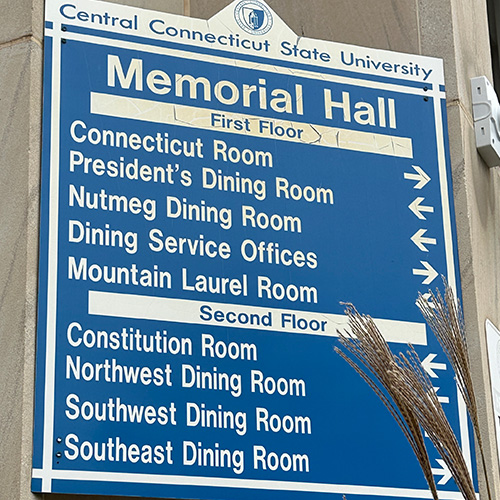
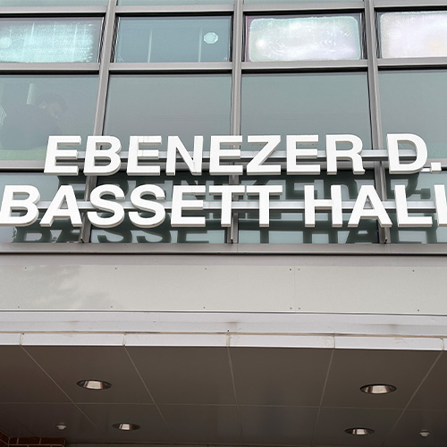
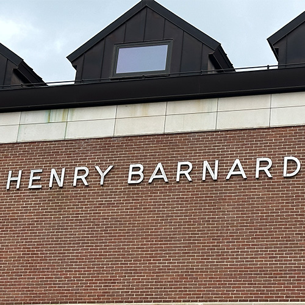
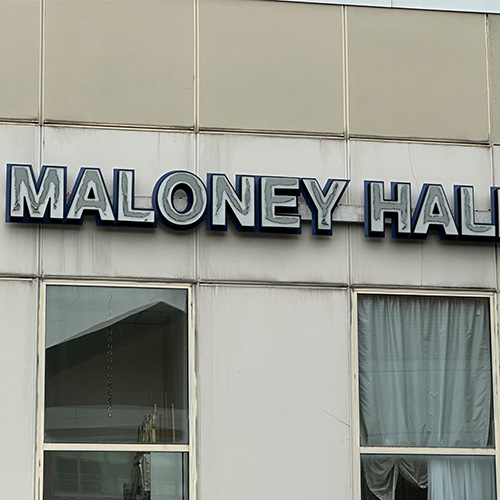
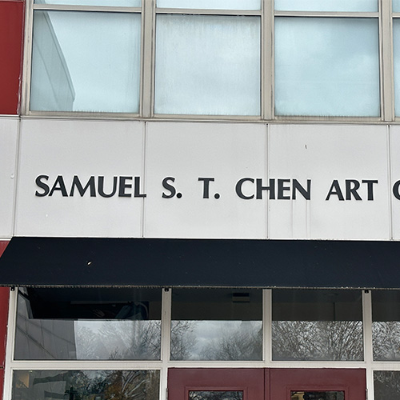

Finding type on campus felt like a scavenger hunt for elements most people never stop and examine. I noticed that directional signage were primarily the same font. This specific sans-serif font is probaby part of the school's brand identity. The art building stood out for being the only one with a serif typeface for it's signage. It was fun getting to walk around campus, take photos, and notice type similarities and differences.




